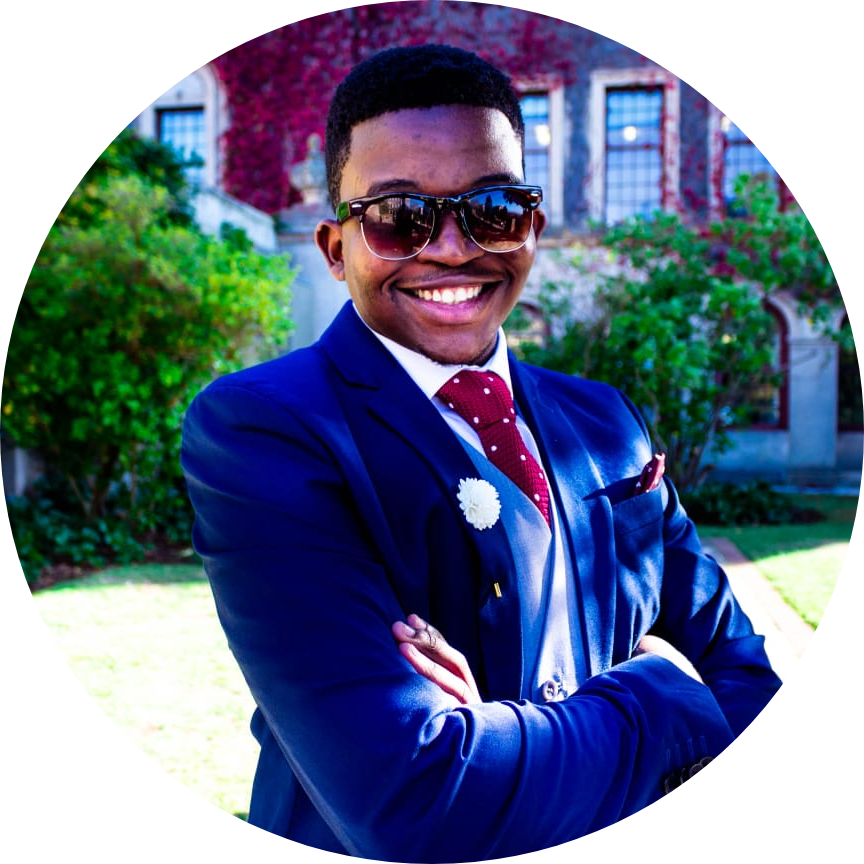
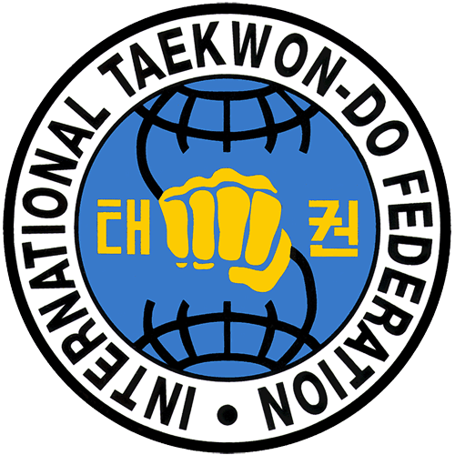

Sbonelo Challis Mntungwa
Contact
- Phone: (+27) 079 478 1940
- Email: sbonelomntungwa@gmail.com
- LinkedIn: linkedin.com/in/sbonelo-mntungwa-b5b084107
- Location: Cape Town, South Africa
Front End Frameworks
JSP | Bootstrap
Low/High Level Languages
Java | Python | C | C++ | Assembly | C#
Database
MySQL | MongoDB
Hardware
Arduino | Raspberry Pi | STM32F0 | STM32F4 Discovery
Data Science
ML in C++ | ML in Python | Adaptive Systems
Integration
Git | Oracle | AWS
Project Management
Trello | Jira | ITIL Framework
Education
University of Cape Town (2014-2018)
- BSc. Computer Science, Computer Engineering
- UCT Taekwon-Do Club Committee (2016-2018)
Velabahleke High School (2010-2013)
- National Senior Certificate
- Head Computer Technician
Internation Computer Driving License (2009-2012, 2015)
- Advanced ICDL Certificate
Udemy Online Certificates (2020, 2021)
- The Complete ASP .NET MVC 5 Course
- Entity Framework in Depth: The Complete Guide
Experience
Software Engineer | CapeRay Medicals (1 Mar 2020 - Present)
-
Design, develop, test and maintain developed software, graphical
interface and control software and electrical subsystems for the Aceso
Mammography System and CapeRay's new product platforms.
(C#, Python, MongoDB, C++)
-
Scrum Master. Handling sprint planning, daily standups and
retrostpective meetings (Jira, Trello)
Application Support Specialist | The Foschini Group (1 Feb 2019 - 28 Feb 2020)
-
Providing system support services to TFG communities by coding,
testing and identifying root causes to technical issues.
(Oracle and SQL)
-
Adding new features to team's internal application to
optimize SQL queries and daily/monthly checks (C#)
-
Part of the TFG Graduate Program which consisted of
various soft skill training (Presentation skills, EQ Training)
Software Enginner Intern | SOLIDitech (Winter 2018)
Software Enginner Intern | SOLIDitech (Summer 2018/ 2019)
-
4 Week Work Experience Program providing students access to
experience with real working environments (Java, JSP, SQL)
Computer Engineer | Display Scenes (2017)
-
Contracted to design, develop and test a slot machine program
and electronic circuit (Arduino, Raspberry Pi, Processing)
Java Developer | PhD Thesis - Transport Studies (2018)
-
Contracted in creating a java application used for a transport
simulation for a PhD thesis (Java, XML)
Lab Tutor | University of Cape Town (2017-2018) part time
- Enforce Lab Rules, Academic Related Queries
- Troubleshooting (Software, Hardware, Network)
Membership
